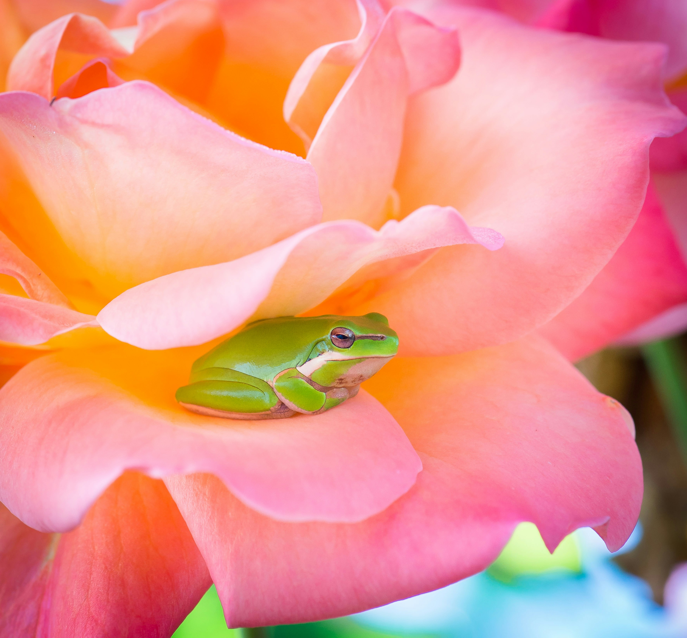
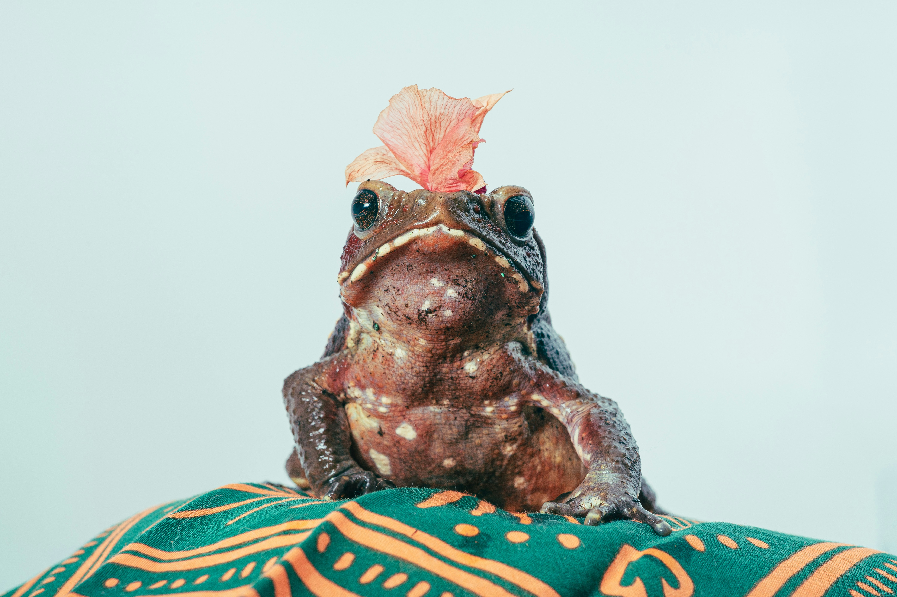
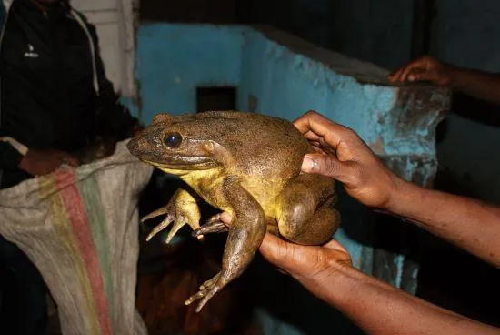
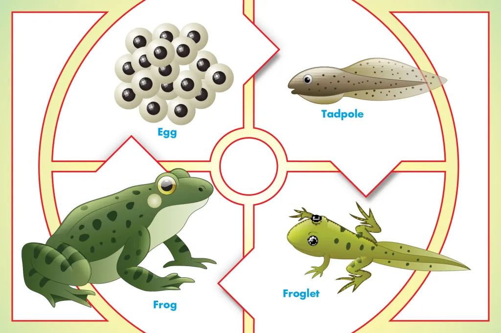

3
Fascinating World of Frogs

What is it?
Frogs are amphibians that live both in water and on land
- They have been around for over 200 million years.
- There are over 7,000 species of frogs worldwide.
Well, isn't that amazing?
Frog Anatomy
- Skin: Moist and permeable for breathing.
- Eyes: Bulging eyes give them a 360° view.
- Legs: Strong hind legs for jumping up to 20 times their body length.
- Tongue: Sticky and fast for catching prey.
Frog Habitats
- Found on every continent except Antarctica.
- Prefer wetlands, rainforests, and ponds.
- Some species thrive in deserts by burrowing underground.

What Do Frogs Eat?
- Diet: Insects, worms, small fish, and even other frogs
- Use their long, sticky tongue to catch prey
- Larger frogs, like the Goliath frog, eat small mammals

An adult Goliath frog caught by a local frog hunter. Marvin Schäfe
Frog Life Cycle
- Eggs: Laid in water, hatch into tadpoles
- Tadpoles: Have gills and tails, no legs
- Metamorphosis: Tadpoles develop legs, lose tails, and become frogs

DREAMCREATION/GETTY IMAGES
Frog Sounds
- Frogs use vocal sacs to make distinct calls
- Males call to attract females or defend territory
- Each species has a unique call
- Fun fact: Some frogs sound like ducks, birds, or even dogs (ikr?)
Ecological Importance
- Frogs help control insect populations
-
Their presence indicates a healthy ecosystem
- They are prey for birds, snakes, and fish
Threats & Conservation ⚠️
- Habitat loss, pollution, and disease threaten frog populations
- Over 30% of frog species are endangered
- Conservation efforts include wetland restoration and captive breeding
Fun Facts about Frogs 🐸
- There are over 7,000 species of frogs on Earth
- A group of frogs is called an army
- Frogs are found on every continent except Antarctica
- Frogs have existed for over 200 million years(psst, longer than dinosaurs)
- Goliath frog from Cameroon is the largest frog species: it can grow up to 32 cm (12.6 in) and weigh over 3 kg (7 lbs)